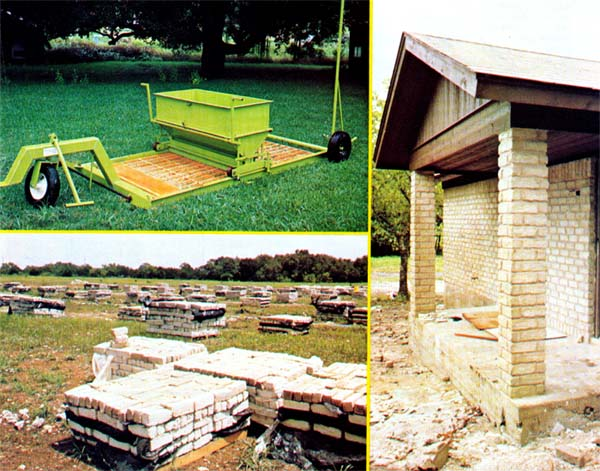

This Brickmaking Machine Makes Nothing But Money!
By the Mother Earth News editors
September/October 1977
MOTHER NO. 46 carried a 30-year-old article by Hi Sibley about a do-it-yourself machine that can produce up to 100 concrete blocks an hour.
Well, that's pretty good. But MOTHER staffers Travis Brock and J. Weiland recently watched a brand-new, super-simple, brickmaking machine near Austin, Texas kick out an incredible 3,500 concrete bricks in just one hour!
That's right . . . 3,500 3" X 3" X 9" concrete bricks in only 60 minutes. And the straightforward apparatus that spewed out all those construction blocks has no motors, no gears, no hydraulic systems, and no other complex hardware. In fact, it's entirely manually operated! And with the production capacity that it has, this little machine is far more than just a unique combination of steel and wood . . . it's a rather fantastic small business all neatly packaged and mounted on three wheels that, if you like, you might even just hitch up to your car and tow home!
FILLING A NICHE
This amazing piece of equipment is the brainchild of Jack Dameron and David and Daniel Dennis, all of Austin. Together, the three men are Methods Manufacturing, Inc . . . . and they've been calling their compact 500-pound machine the "Mobile Maker". David, however, says that MMI is changing the brickmaker's name to "Mold Master" in the States . . . and it's already becoming known as "Adobero" (Mud Mule) in Mexico, where the machine is also being marketed.
It was Dameron who originally sparked the trio into developing the Mold Master. Jack had been working in one end or another of the concrete brick and adobe block business for roughly 20 years, and he was well aware of the need within the trade for just such a contrivance.
Not that MMI's Mud Mule is the first piece of equipment ever developed for the manufacture of concrete bricks or adobe blocks. It's not. A number of other machines and production methods, in fact, have been devised for the fabrication of such construction materials.
Invariably, however, all the other machines and production methods have fallen into two very different categories:
[1] extremely slow and backbreakingly labor-intensive setups in which wooden molds are loaded from wheelbarrows, leveled off with shovels, and then picked up and moved by hand, or
[2] highly automated, complicated, difficult to maintain, and expensive fullfledged production lines.
It's easy to see how the non-labor-intensive, uncomplicated, easy to maintain, inexpensive, and fast Mold Master fills the niche so nicely between the traditional extremes of "too laborious" and "too complex". As MOTHER staffer Travis Brock puts it, "The Mud Mule strikes me as an ideal example of the kind of intermediate technology so many of us are looking for. It's just right for use in a small, decentralized, but very profitable enterprise."
WHAT IT IS
The MMI machine is a marvel of simplicity. It consists of little more than a many-pocketed wooden mold mounted in a heavyduty steel frame. A hopper-designed to roll back and forth-is mounted on the same frame. And when that hopper is filled with concrete mix (called "mud" in the trade) or real adobe mud and then run across the ganged-up individual molds ... it automatically fills and levels them off, all at once!
As the accompanying photos show, the heavy steel frame that is the backbone of the Mold Master is mounted on three wheels. And a single lever on the rear of the frame raises and lowers it so that the gang-mold can be dropped to the ground for filling . . . and then lifted high enough to clear a fresh batch of bricks as the machine is moved on to another "squatting" spot. Furthermore, as the Mud Mule is towed along, it automatically rolls out a long strip of plastic for batch after batch of the fresh blocks to cure on. (Devilishly clever, these Austin boys!)
WHAT IT MAKES
If you decide to feed one of these little brickmakers with truckloads of concrete from a ready-mix plant, two people can supply all the man- or womanpower you'll really need to operate the machine. And those two people won't be limited to the manufacture of just concrete bricks or (when the Mold Master's hopper is filled with real mud) adobe blocks. Simply by changing its molds, this versatile piece of equipment can also turn out artificial rocks, stepping stones, patio tiles, and possibly even concrete fenceposts.
None of the items produced by the MMI machine, of course, are the energy-intensive "fired" ceramic bricks, etc., that you sometimes see used in construction. Instead, they're all molded from colored concrete (a "3-1/2 bag mix" with no aggregate larger than pea-sized-ask any concrete man what that means if you don't know-works well). The bricks, blocks, etc., can be made in almost any color you choose (earthy tones are very popular) and are frequently used as veneer on wood-framed, ranchstyled dwellings.
IT MAKES MONEY TOO!
Although the MMI brickmaker has only been in production for a few months, MOTHER's staffers have already seen it profitably employed by small businesses in at least three ways:
[1] Balcome Brick-of Cedar Park, Texas-used a tractor and grader blade to level off a two-acre "yard", contracted with a local ready-mix outfit for concrete, rolled up a Mud Mule, and began to manufacture concrete bricks. Although Balcome's Mold Master regularly cranks out 3,500 of the building blocks per hour when it's being used, the work crew that operates it also spends a fair amount of time every day just turning and stacking the curing and cured bricks. Still, Balcome's daily output averages 12,000 units, and the yard's total production is sold wholesale to a single buyer for $75/thousand. MOTHER's Travis Brock estimates that, after all expenses, the company is easily netting somewhere between $200 and $300 a day.
[2] MMI's own test production line is set up somewhat differently. There, three men both produce all the concrete (with a small mortar mixer) that is run through one of the Mold Masters, and operate the brickmaking machine too. The yard turns out between 4,000 and 5,000 bricks a day (on an irregular basis, since this is a test facility), which are sold directly to housing contractors. Instead of charging the going retail price of 11d to 12d a unit, however, MMI bids on complete houses and supplies all the bricks that are needed for a building at one predetermined price. Profits for each day's run, Travis estimates, are probably in the neighborhood of $200.
[3] At least one contractor in the Austin area has had yet anotherand for him, better-idea about how a Mud Mule should be used. He's bought his own and he manufactures-right on site-the bricks he needs for the two houses he constructs each month. He figures that this saves him approximately $400 per dwelling and he's very pleased with the whole arrangement.
THE COST IS SURPRISINGLY LOW
The tab for such a versatile piece of moneymaking equipment is far less than you might have supposed: just $2,995 FOB Austin. And that ain't much in this day and age for a machine which-once set up and operating- bids fair to earn its entire purchase price back in as little as 10 days!
It should be emphasized, of course, that the mere purchase of an MMI Mold Master in no way guarantees that you'll ever make a nickel with the blamed thing. As the Dennis brothers and Jack Dameron readily point out, there's more to manufacturing cement bricks than just filling up their machine and watching it create batch after batch of the finished product. There's a certain amount of both physical and mental (planning the flow of materials, lining up sales, etc.) labor involved too.
But if you're not afraid of a little work and if you can handle the business details that go along with it, the basics of an MMI Mud Mulebased cement brick business should be a snap. And if you need the extra help, Jack Dameron himself (for a very reasonable fee) will even come to your home town and do whatever is necessary to get you off on the right foot. How can you beat that?
In short, while nobody-including MOTHER-can swear on a stack of Bibles that this is the ideal self-employment opportunity for you . . . some MOTHER staffers have seen others making a very nice profit with the MMI equipment. And those same staffers have visited the MMI offices and shop and talked to all the principals involved and have come away quite favorably impressed by the ingenuity, workmanship, and integrity of the whole MMI team.
If you'd like to check out the MMI Mold Master for yourself, just send $2.00 and your name and address to Methods Manufacturing, Inc., 12363 Waterpark Rd., Austin, Tex. 78758. And tell 'em MOTHER sent you. And don't forget that two bucks. MMI is made up of little people just like you and me and the good folks there have made a maximum effort to assemble an information packet that will answer all your questions. They're gonna need that $2.00 to cover the cost of processing your info packet order. So, no $2.00 . . . no response. Which, for a deal like this, is just the way it oughta be!
 Above and Below: Here's all there is to producing cement bricks with the MMI machine. |
 Above: The Mold Master... stacks of blocks ready to ship... and as used on a new house. |
|